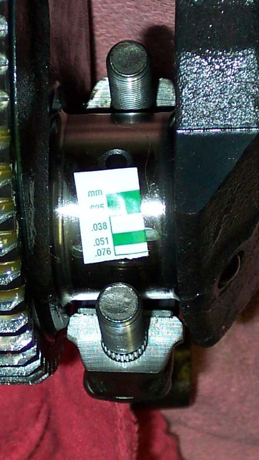
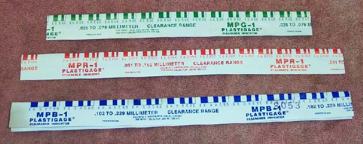
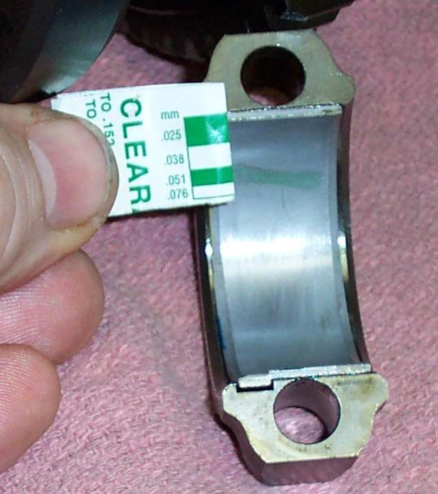
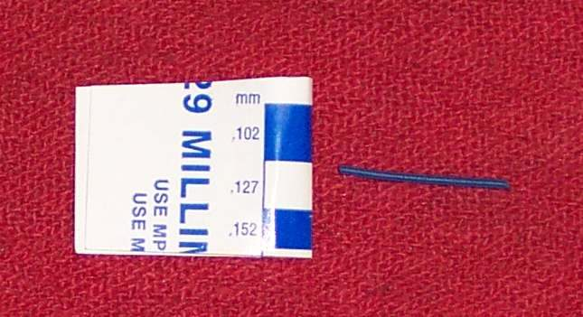

Plain bearings (also called shell or bush bearings) have no balls or rollers. The shaft floats on a thin film of oil held under pressure between it and a shell or the head metal. They last very long while oil and oil pressure are good. Wear shows as knocking, a dropping oil pressure light, or metal in the oil. Plastigauge is a thin plastic thread that is squashed by the bearing cap and then compared with a chart, so clearance can be read without special gauges.
Safety
- This job is done with the engine apart. Follow the manual for how to open the engine.
- The thread squashed by the cap is only a measurement aid. Clean it off before final assembly.
- Never turn the shaft while the thread is under the cap. That ruins the reading.
You need
- Plastigauge in the range that covers the clearance in the manual. It comes in several sizes, with the scale printed on the envelope in millimetres and inches.
- The clearance limit, cap tightening order and torque from the manual.
- A clean bench. Oil and dirt will falsify the result.
Steps
- Look first. Plain bearing shells that have worn through show a different coloured layer, or have hammered or spun in their housing. If the shells are plainly damaged, replace them. No measurement is needed.
- Wipe the shaft journal and the bearing shell dry and clean. Do not oil them.
- Cut a length of Plastigauge slightly shorter than the bearing width. Lay it along the journal, away from any oil hole.
- Fit the cap or the head cover and tighten the bolts to the manual torque, in the stated order. Do not turn the shaft.
- Remove the cap again, gently, without moving the shaft.
- Compare the width of the flattened thread with the scale on the envelope. A wider flat thread means less clearance. Read the nearest mark.
- Compare the reading with the manual. - Within limit: the shell can be reused. Clean off all the plastic with a fingernail or a soft cloth. - Too large: fit a new shell. On some engines a slightly thicker shell is sold. Fit it and measure again. - Still too large, or the journal is scored or worn: the crankshaft needs regrinding to an undersize and undersize shells fitted, if the maker sells them. Many engines do not. A crankshaft may then have to be replaced.
- On a bearing with no cap (a camshaft that runs straight in the head), Plastigauge cannot be used. Check by feel and sight: the cam should rock only a very small amount in its bore, and rocker shafts almost not at all. A workshop can measure with an expanding ball gauge and micrometer.
- Never run low on oil. Wear of this type begins at start-up before oil pressure rises, and lasts as long as the oil supply is good.
Check your work
- Each reading is written down, with the bearing it came from.
- Shells are fitted in their original places and the right way round.
- Oil passages are clean, and the engine is filled with clean oil before the first start.
If it did not fix the problem
- Knock from the bottom end: Deep knocking from the bottom of the engine.
- Metal particles in the oil: Metal particles or flakes in the oil.
- Oil light: Oil pressure or oil level light is on.
- Bottom end assessment: Assess bottom end and internal engine damage.